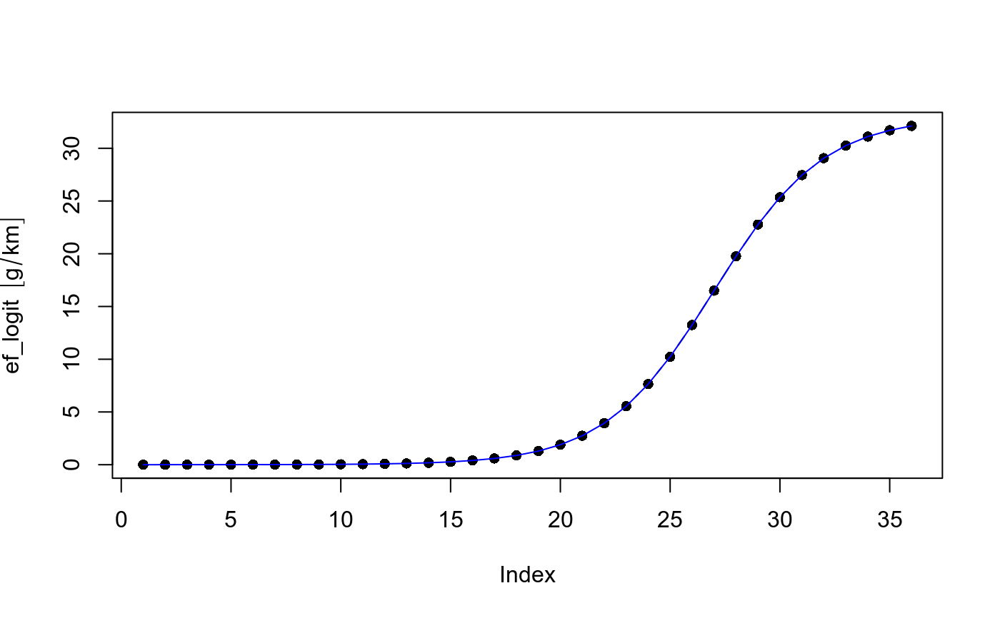

ef_fun.Rdef_fun returns amount of vehicles at each age
ef_fun(ef, type = "logistic", x = 1:length(ef), x0 = mean(ef), k = 1/4, L = max(ef))
| ef | Numeric; numeric vector of emission factors. |
|---|---|
| type | Character; "logistic" by default so far. |
| x | Numeric; vector for ages of use. |
| x0 | Numeric; the x-value of the sigmoid's midpoint, |
| k | Numeric; the steepness of the curve. |
| L | Integer; the curve's maximum value. |
dataframe of age distrubution of vehicles at each street.
https://en.wikipedia.org/wiki/Logistic_function
{ data(fe2015) CO <- vein::EmissionFactors(fe2015[fe2015$Pollutant == "CO", "PC_G"]) ef_logit <- ef_fun(ef = CO, x0 = 27, k = 0.4, L = 33) plot(ef_logit, type = "b", pch = 16) lines(ef_logit, pch = 16, col = "blue") }